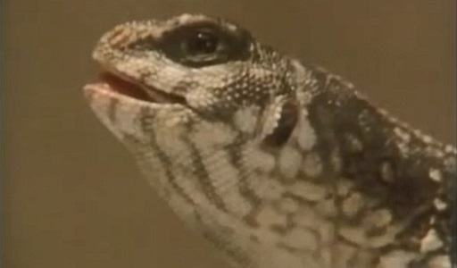

6 Metabolism and body temperature¶
Metabolism is the technical name given to the sum of all the chemical transformations inside cells. Many such changes involve building up complex chemicals from simpler building blocks – for example, the proteins and fats for lactation that were described earlier. In animals, the energy that such ‘building-up’ processes require comes from the process of breaking down foodstuffs – the progressive breaking down in our bodies of the complex macromolecules that comprise our diet. The chemical reactions that take place in an animal are affected by temperature. The adaptations that enable a mammal to regulate body temperature form a key mammalian feature – the ability to maintain body temperature using internal body heat.
6.1 Warm-blooded vs cold-blooded¶
The processes of regulating the internal temperature in mammals contrast sharply with that of other animals, except birds, and a few others. Heat energy liberated during metabolism enables mammals to maintain a stable body temperature and occupy habitats where the external temperature may vary over a large range.
Reptiles get much of their energy directly from the sun as warmth, but when the sunlight fades at dusk the body temperature of a reptile falls and it becomes sluggish, lacking the energy to move. Very early in their history, mammals developed the remarkable ability to generate heat within their bodies by driving their metabolism at a much higher rate. As a consequence, it was necessary to feed more often in order to supply the extra fuel needed to maintain the high body temperature. Physiological processes that limited heat loss evolved.
Activity 3¶
Timing: Allow about 10 minutes
Question¶
Make a list of some benefits of ‘warm-bloodedness’ to mammals and some of the implications of this strategy.
Discussion¶
Mammals are no longer at the mercy of the environment; by contrast, the body temperature of most reptiles, for example, is closely linked to outside temperatures. Thus the arctic fox which you met in the introduction (Figure 1) remains warm and active in very cold conditions. But being warm-blooded has a high energetic cost. In mammals, as much as 80-90% of the energy obtained from their food is needed to maintain body temperature.
The distinction between ‘warm and cold blooded’ animals is a shorthand that is useful in distinguishing between mammals and other animals, but it does not apply universally. Non-mammals can generate body heat, for example a python and some species of fish, such as tuna. A reptile basking in the sun can become as warm to the touch as a mammal and its lethal temperature may be higher than that of many mammals. If you’ve encountered a mammal during hibernation – perhaps a cautious investigation of a hedgehog – you’ll probably have found it surprisingly cold to the touch. So in describing what’s special about the body temperature of mammals, cold-blooded and warm-blooded are terms best avoided.
6.2 Metabolism¶
The chemical transformations that contribute to metabolism depend ultimately on the uptake of oxygen by the animal. In very simplified terms, oxygen is used in the mitochondria to complete the final stages of the breakdown of small energy-rich molecules – products of the chemical fragmentation of macromolecules mentioned earlier. In this process, usable energy is released, along with some heat.
Measuring how much oxygen is consumed by an animal over a period of time, such as a minute or an hour, is a pretty good measure of the intensity of metabolism (i.e. the metabolic rate). But when measuring and comparing oxygen consumption in two animals that are very different in size – say a mouse and an elephant – all you learn is that overall, an elephant consumes much more oxygen over a minute than a mouse does. This is simply because a massive elephant has so many more cells in which metabolism is whirring away. If your interest is in metabolic rate, you need to take size differences into account by calculating the volume of oxygen consumed for a particular amount (or mass) of animal.
Volumes of a gas such as oxygen would be measured in millilitres (ml), or the numerically equivalent unit, cubic centimetres (cm3). The mass of the animal would be measured in grams (g), or perhaps in thousandths of a gram, i.e. milligrams (mg). In practical terms, oxygen consumption by a mouse of known mass would be measured over a period of time, say 15 minutes, and the values recalculated as so many ‘cubic centimetres of oxygen per gram of mouse per hour’. (A more scientifically correct way of expressing the same thing is cm3 O2 g−1 h−1.) In principle, the calculation for the elephant would be done in the same way, though one suspects with a few practical problems along the way.
Reading tables¶
As mentioned earlier in the course, scientific data are often presented in the form of a table. Table 2 is a slightly more complex example. As with scientific diagrams, make sure to read any titles and labels carefully. Look at the headings of the rows and columns. The units in which the values are measured are usually given in the headings, rather than being written beside each value.
Take a look at Table 2, then answer Question 5 underneath.
Metabolic rate / cm3 O2 g−1 h−1 | ||
|---|---|---|
Species | at rest | at peak activity |
salmon | 0.08 | 0.60 |
monitor lizard | 0.08 | 0.38 |
turtle | 0.03 | 0.64 |
hummingbird | 2.80 | 42.00 |
mouse | 2.50 | 20.00 |
dog | 0.33 | 4.02 |
human | 0.23 | 3.20 |
Question 5¶
Question¶
Look at Table 2, which shows the metabolic rates of a number of animals. What is the most striking difference between the values for mammals and those for fish, reptiles and a bird?
Answer¶
The metabolic rates for mammals (and the hummingbird) are much higher than those for the fish and reptiles. This is true of both the ‘at rest’ levels and the ‘peak activity’ values; the mouse, dog and human (and the hummingbird) values are higher than the others, often considerably so.
6.3 Heat from metabolism¶
The high rates of metabolism in mammals (and birds) mean that relatively large amounts of heat are produced as a by-product. But this heat is not wasted; it’s used in these animals to warm the body. The fact that a mammal (or bird) keeps its body temperature at a high level (37 °C for humans) ensures that metabolism proceeds at a high and efficient rate, allowing the sustained and elevated pace of life typical of mammals. Animals that depend on internally generated heat (i.e. metabolic heat) to maintain their body temperature are called endotherms. By contrast, ectotherms have a body temperature influenced most sharply by heat from external sources, i.e. from the immediate environment.
Scientific shorthand¶
You will notice the use of a type of scientific ‘shorthand’ in this section, where letters are used to represent words. The italic letter T is often used to represent ‘temperature’. Here both the temperature inside an animal’s body and the temperature of the surroundings are measured, so we need to differentiate them easily. This is done by adding an appropriate letter, usually subscripted and not italicised, immediately after the T. So here Tb stands for the body temperature of the animal, and Ta for the surrounding temperature. When you see the shorthand version, try to translate it in your head into its real meaning, reading Tb as ‘body temperature’ rather than as ‘tee-little-b’.
6.3.1 Comparing endothermic mammals with an ectotherm¶
Suppose an ectotherm – say a small lizard – is placed in a container in which the air temperature can be varied (a useful alternative term for the temperature ‘outside’ is ambient temperature, Ta). The temperature of the animal’s body (Tb) can be measured while Ta is changed. A miniature temperature-measuring probe inserted into the animal’s cloaca (the common opening for the gut and the urinogenital system) provides a continuous readout of body temperature. An experiment of this type is illustrated in the following video.
This test would start with a comfortable ambient temperature (comfortable for a lizard, that is), say about 38 °C, recording the animal’s body temperature, before lowering the ambient temperature to 30 °C and then measuring the body temperature once more, after allowing the animal to settle down over a couple of hours in the changed conditions.
Video 1 An experiment that shows that when presented with a choice of cold or warm environments, a lizard can shuttle between them to regulate Tb
NARRATOR: This lizard is a desert iguana. As before, its temperature is measured using a thermistor inserted into its cloaca. The high temperature doesn’t seem to bother the lizard at first. But as its body temperature rises, notice the changes in posture that minimise contact with the hot surface – and gaping, another means of losing heat. But to avoid becoming too hot or cold, it must shuttle between the compartments.; |

Reading graphs¶
You’ll study two graphs in the rest of this section. Graphs are often used to display data in a way that makes trends easier to see than in a table. Simple graphs have two axes, one running horizontally, and the other vertically. They are labelled in the same way as the column headings of a table and the data points are then plotted.
![This is a graph of body temperature (vertical axis) against ambient temperature (horizontal axis) for endothermic mammals and a lizard in laboratory studies. The plotted points for a lizard fall on a line that is at 45 degrees to the horizontal axis, increasing towards the right. The plot shows that body temperature in the lizard is linearly related to ambient temperature and body temperature tracks the change in ambient temperature. There is no evidence of regulation. Plots for three monotremes and a cat are at a shallower angle to the horizontal axis. The shallower the angle, the better the regulation of body temperature. All four animals show an ability to regulate. The plotted line for the cat is close to being horizontal, indicating a high degree of regulation.](../../_images/s182_12_figure_17.jpg)
Figure 19 Graph of body temperature against ambient temperature for endothermic mammals and a lizard in laboratory studies, showing the better regulation in the cat (a placental mammal) compared with monotremes (echidna and platypus) and a marsupial (opossum). Tb was measured after 2 hours of constant exposure to each Ta
Figure 19 shows the type of results this experiment would produce. Concentrate for the moment on the data for the lizard. In this graph, the horizontal axis measures ambient temperature, and the vertical axis measures body temperature. For a particular Ta, say 38 °C, there’s a corresponding measure of the lizard’s Tb – in this instance, it was 39 °C, which you can check by following the horizontal dashed line across to the vertical axis, where the value is identified by arrow A. At a Ta of 30 °C, the lizard’s Tb was also 30 °C, as identified by arrow B. For a Ta of 16 °C, the value of Tb was 15.5 °C, as identified by arrow C. Plotting these points accurately is a lot easier to do if you use graph paper. When the full range of ‘lizard’ values is plotted, a line is drawn between them – the lowest plotted values of Ta and Tb are 6 °C and 5 °C respectively.
The same procedure can be repeated for a placental mammal, such as the cat. Look now at the cat data in Figure 19 and check that you follow the plotted points; for example, at a Ta of 10 °C, Tb is 39 °C. Joining all the plotted points gives a more flattened but somewhat ‘jagged’ line over the measured range of ambient temperatures.
Question 6¶
Question¶
What’s the most striking difference between the way in which the cat and the lizard respond to changes of ambient temperature?
Answer¶
The body temperature of the cat stays much the same when the ambient temperature falls. But in the lizard, the body temperature falls as ambient temperature drops. So, the endothermic cat is able to maintain its body temperature – at a high and constant temperature (of about 39 °C), whereas in these conditions, the lizard has seemingly little option but to allow its body temperature to conform to that of its environment. As is typical of mammals, the cat is regulating its body temperature – more technically, it is demonstrating thermoregulation. On this evidence, the lizard is a conformer – body and ambient temperature change in step. But an ability to thermoregulate is not unique to mammals; birds do so very proficiently and even some fish (such as the tuna mentioned earlier) and a few insects do so, in a rather elementary fashion. You’ll notice from Figure 19 that monotremes (and the marsupial representative – the opossum) are also able to thermoregulate, though less precisely than the cat.
6.3.2 Endotherms compared with an ectotherm under natural conditions¶
But now suppose the body temperature of the ectotherm is recorded under sunny natural conditions, with the animal able to display its normal behaviour. Many lizards then have a body temperature considerably above that of the surrounding air, because they are able to bask in the sunshine. In sunny conditions, a modest-sized lizard – for example the common European lizard – can warm from 15 °C (close to the recorded air temperature) to 25 °C in about five minutes by basking side-on to the sun. By shuttling into the sun and back into the shade, this lizard can maintain a relatively even body temperature close to 30 °C, at least during the sunnier months of the year and during the day (Tb falls at night or on sunless days). So here thermoregulation is achievable by behavioural means.
By contrast, in mammals (and birds) thermoregulation can be achieved largely by physiological means – by internal adjustments within the body’s tissues and organs. Adjustments in metabolic rate are an especially important part of the process. Figure 20 helps to explain what’s involved. For the moment, concentrate on the line labelled ‘weasel’ – which, for convenience, can be thought of as a typical temperate mammal. Here, the vertical axis denotes metabolic rate. The horizontal axis is Ta, just as in Figure 19. When you’ve had a look at the graph, try answering the questions below.
![This is a simplified graph of metabolic rate (vertical axis) against ambient temperature (horizontal axis) in contrasting types of mammal: a temperate mammal (a weasel), an arctic mammal (a polar bear cub), and a tropical mammal (a sloth). Each plot shows the range of body temperature over which the metabolic rate does not change and the point at which metabolic rate starts to increase with decreasing temperature. For the sloth, the metabolic rate is constant from 38 degrees to 30 degrees and then starts to rise. For the weasel, the figures are 38 to 18 degrees and for the polar bear, 38 to 10 degrees.](../../_images/s182_12_figure_18.jpg)
Figure 20 A simplified graph of metabolic rate against ambient temperature in contrasting types of mammal: a temperate mammal (a weasel), an arctic mammal (a polar bear cub), and a tropical mammal (a sloth). The basal metabolic rate (BMR) of all three mammal types is assumed to be about 1, for ease of comparison
What’s striking about the metabolic rate for the weasel between the ambient temperatures of 38 °C and 19 °C?
It’s constant, at what seems like the lowest possible value. Between these temperatures, there would be no change, therefore, in the amount of heat produced as a by-product of metabolism.
This minimum rate of metabolism is termed the basal metabolic rate (BMR). This would reflect the ‘at rest’ values recorded earlier for the mammals in Table 2.
Describe what happens when the ambient temperature experienced by the weasel falls below 19 °C.
The metabolic rate increases steadily, which means that the amount of metabolic heat produced also increases. (The fact that it’s a straight line means that the metabolic rate increases by the same amount for a standard drop of ambient temperature, of say 5 or 10 °C.)
Why might this boost in metabolic heat production be important?
When conditions become increasingly colder, the animal is likely to lose a greater amount of heat than it would in warmer temperatures. The extra heat production, therefore, might compensate for this increased loss, which helps explain why body temperature stays at a constant value in the way that we saw for the cat in Figure 19. The type of elevation of metabolic rate seen in Figure 20 is termed a thermogenic response, and is one of the most important distinguishing features of mammals (and of birds too). The type and scale of the thermogenic response varies between mammals living in very different environments. When the metabolic rate in a tropical mammal like a sloth is measured against Ta, the BMR is evident over a much narrower range of Ta, and the rate of metabolism increases very sharply below about 31 °C.
Question 10¶
Question¶
Using the correct technical terms and symbols, briefly explain the way in which metabolism in the arctic mammal changes as ambient temperature drops. You can use the formatting buttons in the answer box below for subscript/superscript and italics.
Answer¶
As Ta falls, the BMR is maintained down to a Ta of about 10 °C, at which point metabolism increases comparatively slowly as Ta drops further. The slopes of the three lines in Figure 20 differ. The steepest such slopes are typical of tropical mammals, especially those that are unlikely to encounter low temperatures. They lose heat relatively rapidly from their surface and their metabolism has to be cranked up very substantially to compensate. By contrast, mammals adjusted to very cold conditions (a polar bear cub or the arctic fox) are much more proficient at conserving the heat they produce, largely because of their superb insulation. The arctic fox can maintain its BMR down to a Ta as low as -30 °C, while the tropical forest-dwelling sloth is obliged to raise its metabolism at any Ta below 30 °C.
How then do mammals raise their metabolic rate in the ways shown in Figure 20? Some behavioural tactics will probably be familiar to you. Increasing activity – e.g. the stamping of feet – reflects an increase in voluntary muscular activity; since the muscles are working harder, they produce more metabolic heat.
Another part of the explanation is shivering, where opposing sets of muscles contract in a high frequency mode. Rather than movement resulting – the usual effect of muscle contraction – these ‘inefficient’ tiny contractions produce large amounts of heat. Shivering can be temporarily blocked by drugs (notably curare, which prevents muscle contraction) but when such drugs are applied, they don’t entirely remove the ability that animals have to increase metabolism in the cold. This suggests that there’s another component at work in such responses. It’s now known that many mammalian tissues (such as the liver of species used to living in the cold) have the capacity to raise their metabolism and burn off more fuel in the mitochondria. There is a range of circumstances when ‘turning on’ heat production in this way is especially advantageous, which can’t be explored in this course. But from a brief look at mammals well-suited to life in the cold, what’s striking is that they don’t just have visible ‘on the surface’ adaptations, such as thick fur. They can display ‘inner’ adaptations – in their metabolism, for example – of the type that only measurements such as those in Figure 20 can reveal.
6.4 Coping with heat¶
Not only are there mechanisms to generate extra heat, but there are cooling mechanisms too, of which sweating is just one example.
Activity 4¶
Timing: Allow about 10 minutes
Question¶
Watch this video clip and briefly note the behavioural responses shown by red kangaroos struggling with hot, dry conditions.
Make sure you open this link in a new tab or window, so you can easily return to this page.
Answer¶
They seek shade and spread saliva onto the forelimbs.
Spreading saliva onto the forelimbs achieves much the same effect as sweating; the evaporation of the fluid requires heat that comes from the skin surface. The effect is to cool the skin and the blood flowing through adjacent vessels. The flow of blood through and near the skin (i.e. the peripheral circulation) often increases, thereby augmenting the effect.
Behaviour plays an important part in promoting heat loss amongst animals that live in hot, dry environments. As you’ve just seen, shade seeking is one familiar example; wallowing in cooling mud is another. Echidnas live in some of the hottest environments on Earth, with temperatures often approaching 40 °C, and appropriate behaviour is crucial to their survival. No laboratory measurements (as seen in Figure 19) could do justice to the subtle and diverse ways in which these animals cope with heat or cold ‘in the field’. In the past, largely on the basis of laboratory studies, echidnas were thought to lack any physiological cooling mechanism. For them, a body temperature of above 38 °C is fatal, because it is at least 6 °C above their normal body temperature. In hot weather, echidnas become entirely nocturnal. They spend their days in caves or burrows, where temperatures are significantly cooler than outside, so their bodies can lose heat to their surroundings. But they also rest in hollowed-out logs where the inside temperature is seldom lower than that outside. The fact that body temperatures appear to stay reasonably constant (seldom more than 35 °C) in such very hot conditions suggests that echidnas may indeed have some physiological means of adjusting temperature, which may well include increasing peripheral circulation. Remaining inactive in such conditions helps reduce the amount of heat the animal produces internally. But echidnas may go one step further and actively reduce their rate of metabolism, entering a profoundly inactive state called torpor. Much the same device is used by echidnas to cope with cold conditions, though here their prolonged inactivity (two to three weeks) and their highly suppressed metabolism (20% of the normal resting value) is more like true hibernation, with Tb as low as 5 °C.
These findings have come from close observation in the field and, if confirmed by other scientists, they would be further evidence that echidnas are not at all primitive and physiologically inept; they have sophisticated control mechanisms in place. Much the same is true of marsupials, though they generally have a lower Tb and BMR than the placental mammals do. But far from being a primitive feature, this subtle metabolic adaptation may reduce the food requirement and ensure that food reserves last for longer during adverse conditions.